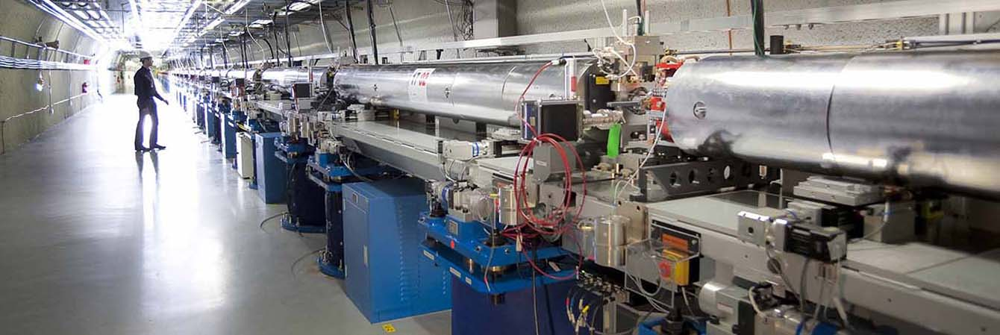

Free Electron Laser

LCLS
The Linac Coherent Light Source (LCLS) located at in Palo Alto, CA takes X-ray snapshots of atoms and molecules at work, providing atomic resolution detail on ultrafast timescales to reveal fundamental processes in materials, technology and living things. Its snapshots can be strung together into “molecular movies” that show chemical reactions as they happen. My time at SLAC National Laboratory was spent working on LCLS attempting to understand the coherence time of a generated beam as well as the crystal monochromator's response to the Self-Seeding SASE Free Electron Laser.
Abstract
One of the key challenges in scientific researches based on free-electron lasers (FELs) is the characterization of the coherence time of the ultra-fast hard x-ray pulse, which fundamentally influences the interaction process between x-rays and materials. Conventional optical methods, based on autocorrelation, are very difficult to realize due to the lack of mirrors. Here, we experimentally demonstrate a novel method which yields a coherence time of 174.7 attoseconds for the 6.92 keV FEL pulses at the Linac Coherent Light Source. In our experiment, a phase shifter is adopted to control the cross-correlation between x-ray and microbunched electrons. This approach provides critical diagnostics for the temporal coherence of x-ray FELs and is universal for general machine parameters; applicable for wide range of photon energy, radiation brightness, repetition rate and FEL pulse duration.